Conversion Process Flow¶
This page provides a comprehensive overview of the Lanelet2 to OpenDRIVE conversion process, including detailed processing steps, data flow, and tag usage.
Overview¶
The converter transforms Lanelet2 map data into OpenDRIVE 1.4 through the
pipeline orchestrated by _Lanelet2ToOpenDRIVEConverter.convert()
(main.py):
- Load and (optionally) preprocess the Lanelet2 map
- Classify lanelets into regular-road groups vs. junction lanelets
- Build regular roads, then synthesise divergence/merge junctions where regular-road predecessors/successors fan out (issue #291)
- Build connecting roads +
Junctionobjects forturn_direction-tagged intersection groups, and emit<junction><priority>records from right-of-way regulatory elements - Build the bidirectional road ↔ lanelet mapping
- Establish road-level and lane-level predecessor/successor links
- Extract traffic-light signals + controllers; assign signals to roads and controllers to junctions
- Extract crosswalks and stop lines as
<object>s; emit StopLine / StopSign / YieldSign<signal>s with dependency back-references - Build synthetic parking-lot roads from
Areas taggedparking_lot - Validate (no duplicate road IDs, ASAM QC) and write the OpenDRIVE XML
High-Level Processing Pipeline¶
flowchart TD
A[Load Lanelet2 Map] --> B{Preprocessing<br/>Enabled?}
B -->|Yes| C[Preprocess Lanelets<br/>merge/remove/replace]
B -->|No| D[Filter by Subtype]
C --> D
D --> E[Classify Lanelets]
E --> F[Junction Lanelets<br/>has turn_direction]
E --> G[Regular Road Lanelets<br/>no turn_direction]
F --> H[Group Junction Lanelets<br/>by spatial overlap]
G --> I[Group Road Lanelets<br/>by lateral adjacency]
H --> J[Build Junction Objects]
I --> K[Build Road Objects]
K --> L[Extract Road Metadata<br/>location, speed_limit]
L --> M[Construct Lane Objects<br/>subtype, speed_limit]
M --> N[Extract Traffic Signals<br/>from regulatory elements]
J --> O[Establish Road-Lane Links]
N --> O
O --> P[Build Junction Connections]
P --> R[Extract Crosswalk Objects<br/>subtype=crosswalk lanelets]
R --> S[Extract Stop Line Objects<br/>type=stop_line linestrings]
S --> T[Build Parking Lots<br/>Area subtype=parking_lot]
T --> Q[Generate OpenDRIVE XML]
style A fill:#e1f5ff
style Q fill:#c8e6c9
style E fill:#fff9c4
style L fill:#ffe0b2
style N fill:#f8bbd0
style R fill:#e8f5e9
style S fill:#f3e5f5
style T fill:#fff3e0Detailed Processing Stages¶
Stage 1: Map Loading and Preprocessing¶
Purpose: Load the Lanelet2 map, apply coordinate transformations, and optionally execute preprocessing operations to clean or modify the map structure.
Input:
- Lanelet2 OSM file path
- Origin specification (MGRS grid code OR lat/lon coordinates)
- Optional coordinate offset (x, y, z)
- Optional preprocessing operations (8 types available)
1.1: Origin Specification and Coordinate Systems¶
The converter supports three methods for specifying the map origin:
Method 1: MGRS Grid Code Only
- The Lanelet2 origin is the south-west corner of the MGRS grid square - Used when the input map is already aligned to that gridMethod 2: MGRS Grid Code + Offset
mgrs_grid: "54SUE"
offset:
x: 81655.73 # Easting offset in meters
y: 50137.43 # Northing offset in meters
z: 42.49998 # Altitude offset in meters (optional)
(mgrs_grid + offset)
- During OpenDRIVE export, the same offset is subtracted from every
coordinate so the resulting .xodr lives in a local frame anchored at
the offset point: output = coordinate − offset
Method 3: Latitude/Longitude
lat_lon:
latitude: 35.6762 # Decimal degrees [-90, 90]
longitude: 139.6503 # Decimal degrees [-180, 180]
altitude: 0.0 # Optional, defaults to 0.0
<header><geoReference> PROJ string is derived
automatically from the lat/lon
Mutual Exclusivity
Exactly one of mgrs_grid (with optional offset) or lat_lon may
be specified. Combining them, or using offset without mgrs_grid,
raises ValueError from parse_origin_from_config.
1.2: Coordinate Transformations¶
A. WGS84 to Local Coordinates
During map loading (load_lanelet2_map() in main.py):
1. Creates MGRSProjector with specified origin
2. Lanelet2 library transforms WGS84 (lat/lon) to local XY coordinates
3. Projection uses UTM zone derived from longitude: zone = int((lon + 180) / 6) + 1
4. Prints summary: number of lanelets, linestrings, and points loaded
B. Coordinate Offset Application
Global offset system (config.py:COORDINATE_OFFSET):
- Set before map loading via COORDINATE_OFFSET.set(x, y, z)
- Applied during OpenDRIVE export when extracting geometry
- Subtraction operation: output_coordinate = lanelet2_coordinate - offset
- Makes output coordinates relative to offset point
- Used when map has large coordinate values that need normalization
C. PROJ String Generation
For OpenDRIVE <geoReference> element:
- From MGRS: mgrs_to_proj_string() (projection.py)
- From Lat/Lon: latlon_to_proj_string() (projection.py)
Format: +proj=utm +zone=ZZ [+south] +lat_0=LAT +lon_0=LON +datum=WGS84 +units=m +no_defs
1.3: Map Loading Process¶
Function: load_lanelet2_map()
Steps:
- Create Projector
-
Initialize
MGRSProjectorwith origin -
Load OSM File
-
Call
lanelet2.io.load(path, projector) -
Validate
-
Check file exists, handle errors
-
Report Statistics
- Number of lanelets loaded
- Number of linestrings
-
Number of points
-
Return
lanelet2.core.LaneletMapobject
Map Structure:
laneletLayer: All lanelets (road segments)lineStringLayer: Standalone linestrings (e.g., stop lines)regulatoryElementLayer: Traffic signals, speed limits, right-of-way rulespointLayer: All geometric points
1.4: Preprocessing Operations (Optional)¶
Eight preprocessing operation types are available, executed in this order:
Preprocessing Operation Parameters Summary¶
The following table lists all preprocessing operations and their parameters:
| Operation | Parameter | Type | Required | Default | Description |
|---|---|---|---|---|---|
| Move Point | point_id |
int | ✓ | - | ID of point to move |
new_x |
float | ✓ | - | New X coordinate (meters) | |
new_y |
float | ✓ | - | New Y coordinate (meters) | |
new_z |
float | ✗ | (unchanged) | New Z coordinate (meters) | |
| Delete Point | point_ids |
List[int] | ✓ | - | List of point IDs to delete |
| Validate | first_lanelet_id |
int | ✓ | - | ID of first lanelet |
second_lanelet_id |
int | ✓ | - | ID of second lanelet (successor) | |
tolerance |
float | ✗ | 0.001 | Max distance for continuity (meters) | |
| Replace | lanelet_ids |
List[int] | ✓ | - | List of lanelet IDs to merge and replace |
validate |
bool | ✗ | false | Validate continuity before merging | |
tolerance |
float | ✗ | 0.001 | Max distance for continuity check (meters) | |
| Merge | lanelet_ids |
List[int] | ✓ | - | List of lanelet IDs to merge |
validate |
bool | ✗ | false | Validate continuity before merging | |
base_id |
int | ✗ | (auto) | Base ID for merged lanelet | |
tolerance |
float | ✗ | 0.001 | Max distance for continuity check (meters) | |
| Remove | lanelet_ids |
List[int] | ✓ | - | List of lanelet IDs to remove (old style) |
| Remove Lanelet | lanelet_ids |
List[int] | ✓ | - | List of lanelet IDs to completely remove |
| Remove Turn Direction | lanelet_ids |
List[int] | ✓ | - | List of lanelet IDs (empty = all lanelets) |
Key:
- ✓ = Required parameter
- ✗ = Optional parameter
- Default values from config.py and operation dataclasses
Operation Behavior and Impact¶
| Operation | Modifies Map | Creates New Elements | Removes Elements | Validation | Use Case |
|---|---|---|---|---|---|
| Move Point | ✓ | ✗ | ✗ | ✗ | Fix misaligned geometry, adjust point positions |
| Delete Point | ✓ | ✗ | ✓ (points) | Min 2 points/linestring | Remove redundant points, simplify geometry |
| Validate | ✗ | ✗ | ✗ | ✓ | Debug connectivity, verify lanelet continuity |
| Replace | ✓ | ✓ (merged) | ✓ (originals) | Optional | Merge lanelets and remove originals |
| Merge | ✓ | ✓ (merged) | ✗ | Optional | Create merged lanelet, keep originals |
| Remove | ✓ | ✗ | ✓ (lanelets) | ✗ | Legacy removal (prefer Remove Lanelet) |
| Remove Lanelet | ✓ | ✗ | ✓ (lanelets) | ✗ | Completely remove unwanted lanelets |
| Remove Turn Direction | ✓ | ✗ | ✗ | ✗ | Convert junction lanelets to regular roads |
Execution Order: Move Point → Delete Point → Validate → Replace → Merge → Remove → Remove Lanelet → Remove Turn Direction
Key:
- ✓ = Yes / Applies
- ✗ = No / Does not apply
Detailed Operation Descriptions¶
A. Move Point Operations (geometry.py)
local_x, local_y, ele attributes
Use case: When parallel lanelets need to be bundled as the same Road in OpenDRIVE, which requires equal lengths. If consecutive lanelets are divided at diagonal boundaries, using MergeOperation would cause length misalignment and prevent lane changes. In such cases, use MovePointOperation to align the boundaries instead.
Before (diagonal boundaries):
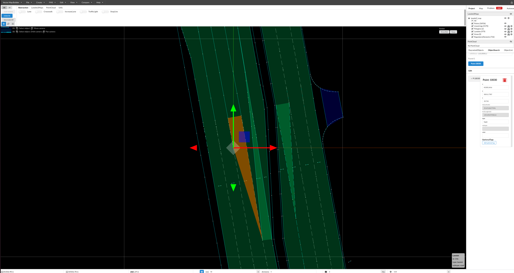
After (aligned boundaries with MovePointOperation):
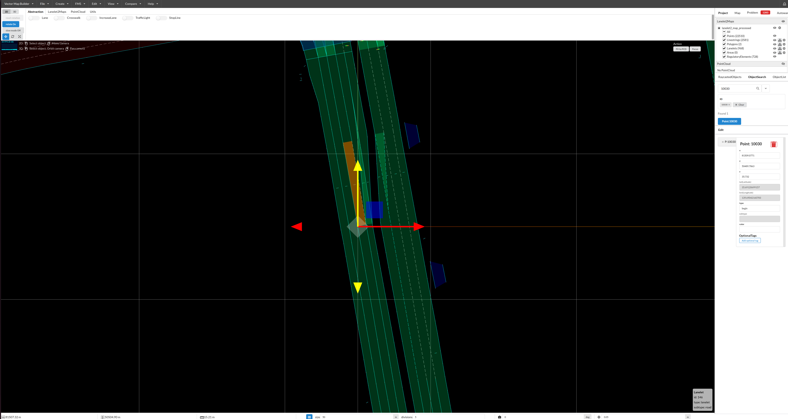
B. Delete Point Operations (geometry.py)
Use case: Use this operation to remove unnecessary points from lanelet boundaries, simplifying the geometry while maintaining the shape.
Before (with unnecessary points):
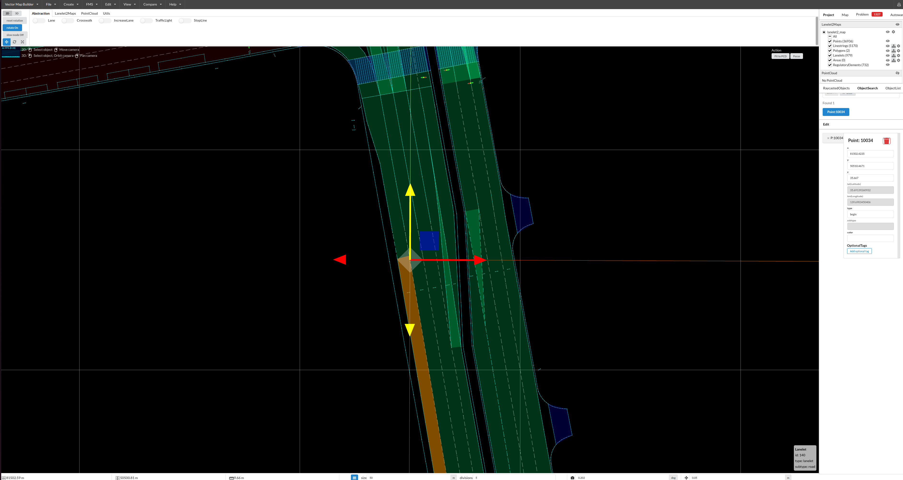
After (points removed):
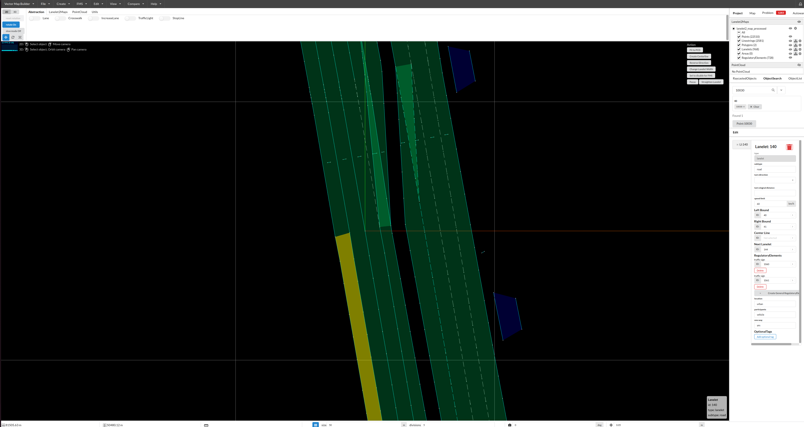
C. Validate Operations (lanelet.py)
D. Replace Operations (lanelet.py)
replace_operations:
- lanelet_ids: [100, 101, 102]
validate: true
tolerance: 0.001 # meters (default: 1e-3)
E. Merge Operations (lanelet.py)
merge_operations:
- lanelet_ids: [100, 101, 102]
validate: true
base_id: 1000 # Optional: base ID for merged lanelet
tolerance: 0.001 # meters (default: 1e-3)
base_id + 3 (or auto-generated)
- Connects left/right boundaries sequentially
Use case: When consecutive lanelets are divided at diagonal boundaries, use MergeOperation to combine them into a single continuous lanelet.
Before merge:
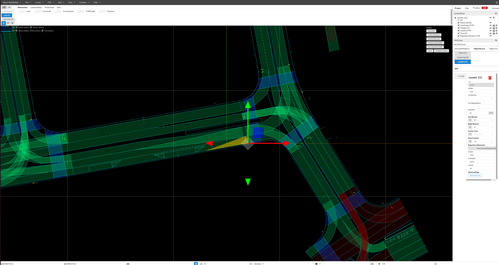
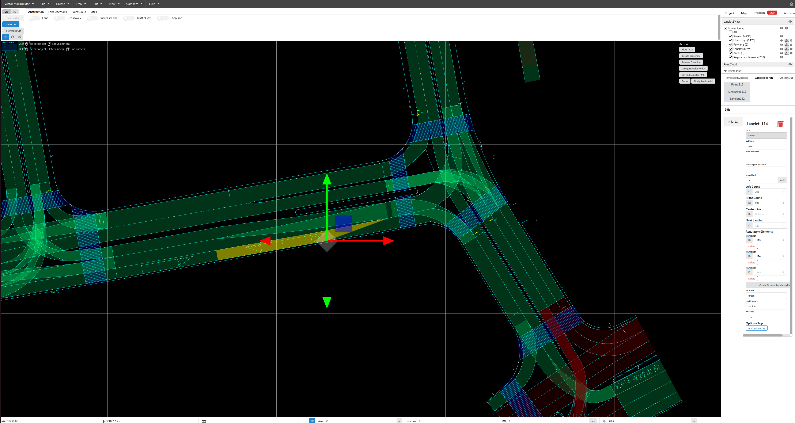
After merge:
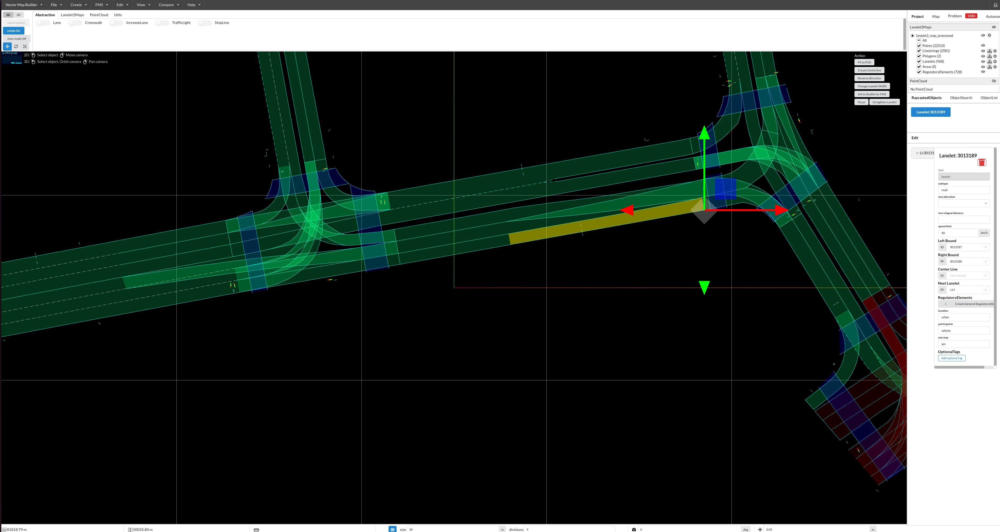
F. Remove Operations (Old Style) (preprocess_lanelet.py)
remove_lanelet_operations for new code
G. Remove Lanelet Operations (preprocess_lanelet.py)
Use case: Remove lanelets that are not needed for conversion, such as isolated lanelets without predecessors or successors. In this case, the map was converted to OpenDRIVE for CARLA simulation purposes, where isolated lanelets without connectivity are unnecessary and can be removed.
Before (with isolated lanelet):
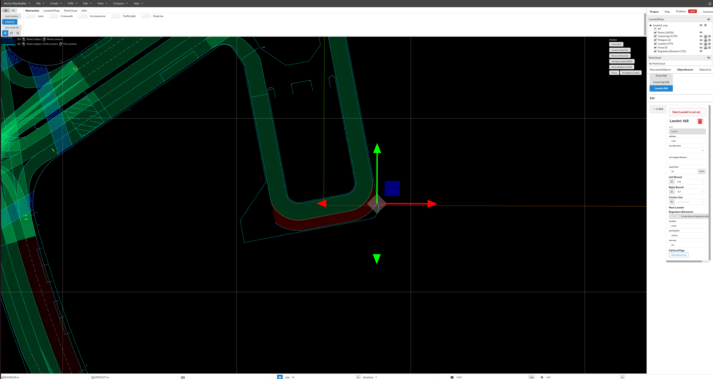
After (isolated lanelet removed):
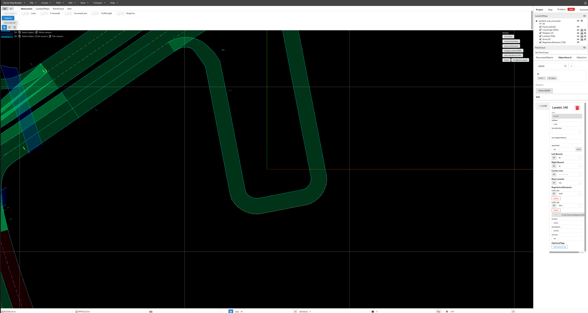
- Reports successful and missing lanelet IDsH. Remove Turn Direction Operations (preprocess_lanelet.py)
remove_turn_direction_operations:
- lanelet_ids: [] # Empty list = all lanelets
# OR
- lanelet_ids: [100, 101] # Specific lanelets
turn_direction attribute from lanelets
- Empty list applies to all lanelets
- Converts junction lanelets to regular road lanelets
Use case: This operation removes the Lanelet2 turn_direction attribute, which is the flag that determines whether a lanelet is classified as a Junction in OpenDRIVE. Use this when you need to convert junction lanelets to regular road lanelets.
Before (with turn_direction attribute):
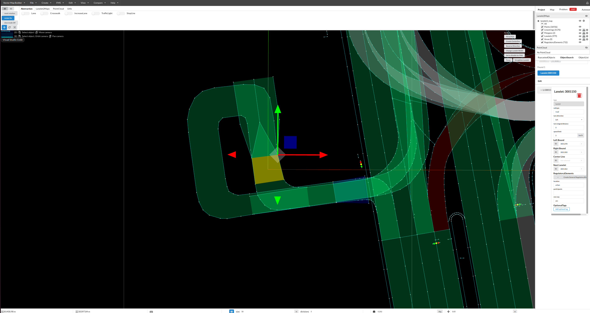
After (turn_direction attribute removed):
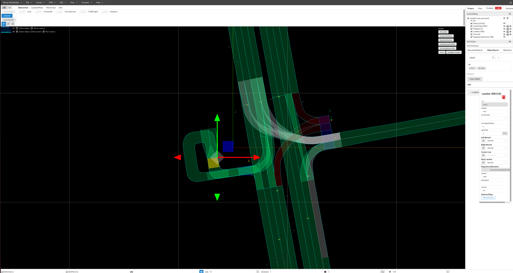
1.5: Merge Operation Details¶
Process (lanelet.py):
- Validation (if enabled):
- Check left boundary endpoint of lanelet N matches start point of lanelet N+1
- Check right boundary endpoint of lanelet N matches start point of lanelet N+1
- Calculate 3D distance:
sqrt((x1-x2)² + (y1-y2)² + (z1-z2)²) -
Pass if both distances ≤ tolerance (default: 0.001m)
-
Boundary Connection:
- Left boundary: All points from first lanelet + remaining points from second (skip duplicate junction point)
- Right boundary: Same logic as left boundary
-
Result: Continuous linestrings spanning both lanelets
-
New Lanelet Creation:
- ID:
base_id + 3(offset avoids conflicts with boundaries) - Attributes copied from first lanelet
-
References to regulatory elements preserved
-
Multi-Lanelet Merging:
- For N lanelets: iteratively merge pairs
- Base IDs incremented by 10 for each operation
1.6: Validation and Error Handling¶
Origin Validation (main.py:parse_origin_from_config):
- Ensures exactly one of: mgrs_grid (with optional offset) or lat_lon
- Validates offset only used with mgrs_grid
- Accepts the legacy mgrs_code field as a synonym for mgrs_grid
- Raises ValueError for invalid combinations
Coordinate Range Validation (preprocess_lanelet.py):
- Latitude: must be in range [-90, 90]
- Longitude: must be in range [-180, 180]
- Raises ValueError if out of range
Continuity Validation (lanelet.py):
- Checks 3D distance between consecutive lanelet boundaries
- Used in merge and replace operations
- Reports specific distance values when validation fails
Point Deletion Validation (geometry.py):
- Ensures linestrings retain minimum 2 points
- Prevents creation of invalid geometry
- Skips linestrings that would become invalid
1.7: Configuration Flow¶
Main Entry Point: preprocess_and_convert_with_hydra()
Execution Sequence: 1. Parse Hydra Config: Load YAML configuration 2. Parse Origin: Determine origin method (MGRS vs. lat/lon) 3. Set Coordinate Offset: If offset specified, activate global offset 4. Run Preprocessing: If operations configured, execute preprocessing 5. Load Map: Load preprocessed (or original) Lanelet2 map 6. Convert to OpenDRIVE: Execute conversion pipeline 7. Write Output: Save OpenDRIVE XML file
Code Locations:
- Main flow:
main.py:preprocess_and_convert_with_hydra - Origin parsing:
main.py:parse_origin_from_config - Preprocessing execution:
preprocess_lanelet.py:LaneletPreprocessor.process - MGRS / lat-lon projection helpers:
projection.py
Output: Preprocessed Lanelet2 map with: - Coordinate system aligned to specified origin - Optional coordinate offset applied - Structural modifications from preprocessing operations - Validated geometry and topology
Stage 2: Lanelet Classification¶
Purpose: Separate lanelets into junction lanelets and regular road lanelets.
Criteria:
- Junction lanelet: Has
turn_directionattribute (present in intersection lanelets) - Regular road lanelet: Does NOT have
turn_directionattribute
Processing:
all_lanelets = list(lanelet_map.laneletLayer)
junction_lanelets = _filter_lanelets_inside_junction(all_lanelets)
road_lanelets = _filter_lanelets_outside_junction(all_lanelets)
Output:
- List of junction lanelets
- List of regular road lanelets
Code Location: junction.py:_filter_lanelets_inside_junction / find_junction_groups
Stage 3: Road Grouping¶
Purpose: Group adjacent road lanelets into roads based on lateral adjacency (physically adjacent lanes sharing left/right boundaries).
Processing: 1. Filter lanelets by subtype (only "road" lanelets) and exclude junction lanelets 2. Find laterally adjacent lanelets using routing graph (left/right relationships, not successor/predecessor) 3. Group laterally adjacent lanelets into road segments using depth-first search
Output: List of road groups (each group = set of laterally adjacent lanelets)
Code Location: road.py – Road.construct_from_lanelet_map(), util.py – find_adjacent_groups()
Stage 4: Road Metadata Extraction¶
Purpose: Extract road-level metadata from lanelet tags.
Tags Used:
| Tag | Purpose | Mapping |
|---|---|---|
location |
Road type classification | "urban" → TOWN"highway" → MOTORWAY"rural" → RURAL"private" (≤10 km/h) → LOW_SPEED |
speed_limit |
Speed restrictions | Parsed as float → RoadTypeSpeed.max |
Fallback Logic:
If location tag is not present, road type is inferred from speed:
- speed ≤ 10 → LOW_SPEED
- 10 < speed ≤ 50 → TOWN
- 50 < speed ≤ 100 → RURAL
- speed > 100 → MOTORWAY
Processing:
Output: RoadTypeDefinition objects with speed and road type
Code Location: opendrive/road.py:Road._extract_road_types_from_lanelets
Stage 5: Lane Construction¶
Purpose: Construct OpenDRIVE Lane objects from Lanelet2 lanelets.
Tags Used:
| Tag | Purpose | Mapping |
|---|---|---|
subtype |
Lane type classification | "road" or "highway" → DRIVING"walkway" → SIDEWALK"bicycle_lane" → BIKINGDefault → DRIVING |
speed_limit |
Lane-level speed limit | Added as LaneSpeed at s=0.0 |
Processing:
Output: Lane objects with proper type and speed attributes
Code Location: opendrive/lane.py:Lane.construct_from_lanelet
Stage 6: Traffic Signal Extraction¶
Purpose: Extract traffic lights and controllers from Lanelet2 regulatory elements.
Tags Used:
| Tag | Source | Purpose | Mapping |
|---|---|---|---|
subtype (RE attr) |
Traffic light regulatory element | Signal type | "pedestrian" → TRAFFIC_LIGHT_PEDESTRIANotherwise → TRAFFIC_LIGHT_3_LIGHTS |
arrow (light_bulbs point attr) |
Per-bulb attribute on light_bulbs LineString |
Signal subtype bitmask | left=1, right=2, up=4 (OR-combined; see signals.md) |
trafficLights |
Regulatory element | Signal geometry | LineString3d → Signal position |
Processing:
1. Filter all traffic light regulatory elements
2. Extract signal positions from LineString geometries
3. Map signals to affected roads via lanelet references
4. Create Signal and Controller objects
Output:
- List of
Signalobjects with positions (s, t coordinates) - List of
Controllerobjects grouping related signals
Code Location:
- Signal extraction:
opendrive/signals_and_controllers.py:SignalsAndControllers.construct_from_lanelet_map - Type mapping:
opendrive/signal.py:Signal.construct_from_lanelet2_traffic_signalandSignalType
Stage 7: Junction Processing¶
Purpose: Group intersection lanelets into junction objects and create connecting roads.
Processing:
1. Group junction lanelets by spatial overlap
2. Create Junction objects for each group
3. Build ConnectingRoad objects for junction lanes
4. Link connecting roads to incoming/outgoing roads
Output: List of Junction objects with connections
Code Location:
- Junction grouping:
junction.py:find_junction_groups - Connecting road construction:
opendrive/road.py:Road.construct_connecting_roads_from_junctions - Junction objects + connections:
opendrive/junction.py:Junction.construct_from_lanelet_groups/Junction.build_connections_from_roads/Junction.build_priorities_from_regulatory_elements - Synthetic divergence/merge junctions (issue #291):
divergence.py:apply_divergence_synthesis - Orchestration:
main.py:_Lanelet2ToOpenDRIVEConverter._build_junction_structure/convert
Stage 8: Road-Lane Linking¶
Purpose: Establish predecessor/successor relationships between roads and lanes.
Processing:
1. Map lanelet successor/predecessor relationships
2. Convert to road-level and lane-level links
3. Set Link objects on Road and Lane instances
Output: Complete connectivity graph
Stage 8.5: Crosswalk Object Extraction¶
Purpose: Convert Lanelet2 crosswalk lanelets (subtype="crosswalk") into OpenDRIVE <object type="crosswalk"> elements and assign them to the nearest roads.
Tags Used:
| Tag | Purpose |
|---|---|
subtype="crosswalk" |
Identifies pedestrian crossing lanelets |
Processing:
- Filter all lanelets with
subtype="crosswalk" - For each crosswalk lanelet:
a. Extract four boundary vertices (
leftBound[0],leftBound[-1],rightBound[-1],rightBound[0]) b. Compute centroid of the four vertices c. Sample reference line of all roads (10 points per geometry segment) d. Find the nearest road within 50 m threshold e. Project centroid onto road reference line →(s, t, road_hdg)f. Compute crosswalk heading relative to road direction →hdgg. Computewidth(entry span) andlength(crossing distance) h. Transform polygon vertices to object-local coordinates →<cornerLocal>points - Assign
CrosswalkObjectinstances to their nearest road'sobjectslist
Output: Road.objects populated with CrosswalkObject instances
Code Location: opendrive/objects.py, main.py – _extract_and_assign_crosswalks()
Detailed Documentation
For full details on the crosswalk conversion algorithm, coordinate systems, and CARLA behavior, see Crosswalk Objects.
Stage 8.6: Stop Line Object Extraction¶
Purpose: Convert Lanelet2 linestrings with type="stop_line" into OpenDRIVE <object type="stopLine"> elements and assign them to the nearest roads.
Tags Used:
| Tag | Purpose |
|---|---|
type="stop_line" |
Identifies stop line linestrings |
Processing:
- Iterate over all linestrings in
lineStringLayer; select those withtype="stop_line" - For each stop line linestring:
a. Compute the centroid of all 2D points
b. Sample reference lines of all roads (10 points per geometry segment)
c. Find the nearest road within 50 m threshold
d. Project centroid onto the road reference line →
(s, t, road_hdg)e. Computez_offsetas average 3D elevation minus road elevation atsf. Compute stop line heading relative to road direction →hdgg. Setwidth= distance from first to last point;length= 0 (zero thickness) - Assign
StopLineObjectinstances to their nearest road'sobjectslist
Output: Road.objects populated with StopLineObject instances alongside any existing CrosswalkObject instances
Code Location: opendrive/objects.py, main.py – _extract_and_assign_stop_lines()
Detailed Documentation
For full details on the stop line conversion algorithm, see Stop Line Objects.
Stage 8.9: Parking Lot Building¶
Purpose: Convert Lanelet2 Area elements with subtype="parking_lot" (or type="parking_lot") into synthetic OpenDRIVE roads, each carrying <lane type="parking"> lanes that span the drivable width of the area and one <object type="parkingSpace"> per individual stall. Unlike Stages 8.5 and 8.6, which attach objects to pre-existing roads, this stage creates brand-new synthetic roads that represent the parking-lot geometry rather than traffic-flow paths.
Tags Used:
| Tag | Purpose |
|---|---|
type="parking_lot" or subtype="parking_lot" (on Area) |
Identifies parking-lot polygons |
type="parking_space" or subtype="parking_space" (on LineString) |
Identifies individual stalls within a parking lot |
Processing:
- Filter all
Areas inareaLayerwhosetypeorsubtypeattribute equals"parking_lot". Skip areas whose polygon area is smaller thanmin_area_polygon_m2(default 1.0 m²) and emit a warning. - Filter all
LineStrings inlineStringLayerwhosetypeorsubtypeattribute equals"parking_space". Assign each stall to the nearest parking-lot area withinnearest_area_threshold_m(default 30 m); stalls that have no qualifying area within this radius are dropped with a warning. - For each parking-lot area, derive an oriented bounding box (OBB) by running 2-D PCA over the polygon vertices. The PCA yields a centre point, a principal long axis, an along-axis length, and an across-axis length.
- Build a synthetic
Roadwith: - A single
<geometry type="line">placed along the OBB long axis, starting at one end of the bounding box. - One
<laneSection>containing a centre lane (id=0,type=none) plus two parking lanes (id=-1 and id=+1, both<lane type="parking">) each with constant width equal to across-axis length / 2. - For each stall belonging to the area: project the stall
LineStringcentroid onto the new road's reference line via Frenet projection to obtain(s, t); computehdgas the angle between the stallLineStringdirection and the reference-line tangent; setlengthto the stallLineString's polyline length andwidthtodefault_stall_width(default 2.5 m). - Append the
ParkingSpaceObjectinstances toroad.objects; append the synthetic road toall_roads.
Output: all_roads extended with synthetic parking roads, each carrying its associated ParkingSpaceObject list.
Code Location: opendrive/parking.py, main.py – Step 6.9 in _Lanelet2ToOpenDRIVEConverter.convert()
Scope notes: Per spec §2.2, the following are intentionally out of scope for this stage: curved geometry along the road reference line (only straight-line OBB axis is used), multi-row decomposition within a single parking-lot area, multi-level or stacked parking structures, predecessor/successor road linkage connecting synthetic parking roads to adjacent traffic roads, and export of the parking-lot polygon outline as an OpenDRIVE outline element.
Stage 9: OpenDRIVE XML Generation¶
Purpose: Serialize the constructed OpenDRIVE objects to XML format.
Processing:
1. Compute north/south/east/west bounds from the projected pointLayer (geometry.py:compute_point_layer_bounds)
2. Generate the geoReference PROJ string from the resolved origin (projection.latlon_to_proj_string or projection.mgrs_to_proj_string)
3. Build the Header (revMajor/revMinor pinned to 1/4) plus <road>, <junction>, <controller> collections inside the OpenDRIVE dataclass
4. Serialize to XML using lxml (opendrive.export_to_xml / opendrive.save_opendrive_to_file)
5. Write the .xodr and the persisted lanelet → (road, lane) mapping JSON next to it
Output: OpenDRIVE 1.4 .xodr file plus <stem>_mapping.json (and <stem>_preprocessed.osm if any preprocessing ran).
Code Location: main.py:_Lanelet2ToOpenDRIVEConverter._write_opendrive_output, opendrive/opendrive_dataclass.py, opendrive/xml_utils.py
Configuration System and YAML Files¶
This section explains the relationship between YAML configuration files and converter behavior, covering Hydra's configuration system and how settings control the conversion process.
Configuration Architecture¶
The converter uses Hydra for hierarchical configuration management, allowing flexible, modular configuration through YAML files and command-line overrides.
Configuration Directory Structure:
src/autoware_lanelet2_to_opendrive/conf/
├── config.yaml # Main configuration file
├── map/ # Map-specific configurations
│ ├── example.yaml
│ ├── example_mgrs_offset.yaml
│ ├── example_latlon.yaml
│ └── nishishinjuku.yaml
└── target/ # Target simulator configurations
├── default.yaml
└── carla.yaml
Configuration File Hierarchy¶
1. Main Configuration (conf/config.yaml)¶
Purpose: Defines global settings and default configuration groups.
Key Sections:
defaults:
- _self_ # Load this file first
- map: example # Default map config
- target: default # Default target config
input_map_path: ??? # Required: must be specified
output_map_path: null # Optional: auto-generated if not set
dry_run: false # Validation only (no output file)
verbose: false # Enable debug logging
Behavior:
???indicates required field - must be set via CLI or config filenullindicates optional field - has fallback behaviordefaultssection specifies config group defaults
2. Map Configurations (conf/map/*.yaml)¶
Purpose: Map-specific settings including origin, preprocessing operations, and special handling rules.
Example: conf/map/example.yaml
# Origin specification (choose ONE method):
mgrs_grid: "54SUE815501"
# Preprocessing operations
merge_operations:
- lanelet_ids: [100, 101, 102]
validate: true
tolerance: 0.001
remove_lanelet_operations:
- lanelet_ids: [300, 301]
Behavior Impact:
| Setting | Effect | Default |
|---|---|---|
mgrs_grid |
Sets coordinate system origin | Required (one of 3 methods) |
merge_operations |
Combines lanelets before conversion | Empty (no merging) |
remove_lanelet_operations |
Removes lanelets from map | Empty (no removal) |
Alternative Origin Methods:
Method A: MGRS Grid + Offset
# conf/map/example_mgrs_offset.yaml
mgrs_grid: "54SUE"
offset:
x: 81655.73 # Easting in meters
y: 50137.43 # Northing in meters
z: 42.49998 # Altitude in meters
Method B: Latitude/Longitude
# conf/map/example_latlon.yaml
lat_lon:
latitude: -33.123456 # Decimal degrees
longitude: 151.234567 # Decimal degrees
altitude: 42.5 # Meters above sea level
3. Target Configurations (conf/target/*.yaml)¶
Purpose: Simulator-specific or use-case-specific settings.
Example: conf/target/default.yaml
exclude_non_junction_signals: false # Include all traffic signals
traffic_rule: "RHT" # Right-Hand Traffic
Example: conf/target/carla.yaml
CARLA-Specific Information
For detailed information about how OpenDRIVE tags are used in CARLA and how Lanelet2 tags map to them, see CARLA OpenDRIVE and Lanelet2 Tag Mapping.
Behavior Impact:
| Setting | false Behavior |
true Behavior |
|---|---|---|
exclude_non_junction_signals |
Export all traffic signals | Only export signals in junctions |
| Traffic Rule | Lane ID Ordering | Use Case |
|---|---|---|
"RHT" |
Right-hand traffic (negative IDs) | US, Europe, China |
"LHT" |
Left-hand traffic (negative IDs, same structure as RHT) | UK, Japan, Australia |
OpenDRIVE Coordinate System and Lane Placement¶
Road Coordinate System (s-t coordinate system): - s-axis: Along the reference line (travel direction, always increasing) - t-axis: Lateral to the reference line (right is positive, left is negative)
Lane Coordinate System: - Each lane's s-coordinate corresponds to the road coordinate system's s-coordinate - Lane width is defined as the lateral distance from the reference line
Implementation Details:
| Traffic Rule | Reference Line Position | Lane Position | Lane ID | Lane Group | Lane Coordinate Direction | t-coordinate Sign | Compliant |
|---|---|---|---|---|---|---|---|
| RHT | Left edge (leftBound) | Right side | Negative (-1, -2, -3) | Right lanes | Same as road coordinate (forward) | t > 0 | ✓ |
| LHT | Left edge (leftBound) | Right side | Negative (-1, -2, -3) | Right lanes | Same as road coordinate (forward) | t > 0 | ✓ |
Key Points:
- Unified reference line placement
- Both RHT and LHT use the left edge (leftBound) as the reference line
-
This creates a consistent OpenDRIVE structure regardless of traffic rule
-
All lanes have s-axis aligned with road coordinate system
- For both RHT and LHT, s-coordinate increases in the travel direction
-
No need to reverse lane coordinate systems
-
Lane ID sign determines width definition direction
-
Both RHT and LHT use negative IDs (right lanes): from reference line to the right (t > 0)
-
Traffic rule indication
- The
road@ruleattribute ("RHT" or "LHT") indicates the traffic direction - This is the authoritative source for determining left-hand vs right-hand traffic
Visual Representation:
RHT (Right-Hand Traffic):
Reference Line (s-axis →, left edge)
[s=0] ━━━━━━━━━━━━━━━━━━━━━━━━━━━→ [s=L]
↓ (t > 0, right direction)
[Lane -1] s-axis → (same as road coordinate)
[Lane -2] s-axis → (same as road coordinate)
[Lane -3] s-axis → (same as road coordinate)
road@rule="RHT"
LHT (Left-Hand Traffic):
Reference Line (s-axis →, left edge)
[s=0] ━━━━━━━━━━━━━━━━━━━━━━━━━━━→ [s=L]
↓ (t > 0, right direction)
[Lane -1] s-axis → (same as road coordinate)
[Lane -2] s-axis → (same as road coordinate)
[Lane -3] s-axis → (same as road coordinate)
road@rule="LHT" (indicates left-hand traffic direction)
Note: Both RHT and LHT use the same geometric structure. The road@rule attribute is the only difference, which CARLA uses to determine the correct vehicle driving direction.
Configuration Composition and Merging¶
Hydra Configuration Resolution Order:
- Load
config.yaml(base configuration) - Merge
map/<name>.yaml(selected viamap=<name>) - Merge
target/<name>.yaml(selected viatarget=<name>) - Apply command-line overrides (highest priority)
Example Merge Process:
uv run python -m autoware_lanelet2_to_opendrive.main \
map=nishishinjuku \
target=carla \
input_map_path=/path/to/map.osm \
verbose=true
Resolution Steps:
| Step | File | Settings Loaded |
|---|---|---|
| 1 | config.yaml |
defaults, dry_run=false, verbose=false |
| 2 | map/nishishinjuku.yaml |
mgrs_grid, merge_operations, etc. |
| 3 | target/carla.yaml |
exclude_non_junction_signals=true |
| 4 | CLI override | input_map_path=/path/to/map.osm, verbose=true |
Final Configuration:
input_map_path: /path/to/map.osm # From CLI
mgrs_grid: <from nishishinjuku> # From map config
exclude_non_junction_signals: true # From target config
verbose: true # From CLI override
dry_run: false # From config.yaml
Command-Line Override Syntax¶
Basic Syntax:
Common Overrides:
1. Change Configuration Groups:
2. Override Simple Values:
3. Override Nested Values:
Use the same dotted path that exists in the resolved config (e.g.
map.offset, parampoly3.coefficient_epsilon, stopline.width):
map.offset.x=100.5 map.offset.y=200.3 map.offset.z=10.0
parampoly3.default_segment_length=2.0 stopline.width=0.2
4. Add Preprocessing Operations:
Preprocessing operations live under the selected map= config, so override
them via the map.* namespace:
5. Null Out Optional Values:
Configuration Examples and Behaviors¶
Example 1: Basic Conversion¶
Command:
uv run python -m autoware_lanelet2_to_opendrive.main \
map=example \
input_map_path=input.osm \
output_map_path=output.xodr
Configuration Result:
- Origin: MGRS
54SUE815501 - No preprocessing operations
- Include all signals
- Right-hand traffic
- Output:
output.xodr
Behavior:
1. Load input.osm with MGRS origin
2. Convert all lanelets to OpenDRIVE
3. Include all traffic signals
4. Write to output.xodr
Example 2: CARLA-Compatible Conversion¶
Command:
uv run python -m autoware_lanelet2_to_opendrive.main \
map=my_map \
target=carla \
input_map_path=input.osm
Configuration Result:
- Origin: From
map/my_map.yaml exclude_non_junction_signals=true(CARLA requirement)- Auto-generated output path
- Right-hand traffic
Behavior:
1. Load map with specified origin
2. Convert lanelets to OpenDRIVE
3. Filter out traffic signals NOT in junctions
4. Write to auto-generated path: input.xodr
Example 3: Preprocessing + Custom Origin¶
Command:
uv run python -m autoware_lanelet2_to_opendrive.main \
map=example \
input_map_path=input.osm \
map.mgrs_grid=54SUE \
map.offset.x=81655.73 \
map.offset.y=50137.43 \
map.offset.z=42.5 \
'+map.merge_operations=[{lanelet_ids: [100,101,102], validate: true}]'
Configuration Result:
- Origin: MGRS
54SUEwith offset - Merge operations: Combine lanelets 100, 101, 102
- Coordinate offset applied: x=81655.73, y=50137.43, z=42.5
Behavior: 1. Load map with MGRS+offset origin 2. Preprocess: Merge lanelets 100, 101, 102 (validates continuity first) 3. Convert to OpenDRIVE 4. Apply offset: Output coords = Lanelet2 coords - offset 5. Write to auto-generated path
Example 4: Validation Only (Dry Run)¶
Command:
uv run python -m autoware_lanelet2_to_opendrive.main \
map=example \
input_map_path=input.osm \
dry_run=true \
verbose=true
Configuration Result:
dry_run=true: No output file writtenverbose=true: Detailed logging enabled
Behavior: 1. Load and parse map 2. Execute all conversion steps 3. Validate geometry and topology 4. Log detailed information 5. Skip writing output file 6. Report validation results
Configuration Validation¶
Runtime Validation Checks:
- Origin Mutual Exclusivity (
main.py:parse_origin_from_config) - Error if both
mgrs_gridandlat_lonspecified -
Error if
offsetused withoutmgrs_grid -
Required Fields (
main.py:main) -
Error if
input_map_pathnot specified (marked with???inconfig.yaml) -
Coordinate Ranges (
preprocess_lanelet.py:LatLonOrigin) - Error if latitude not in [-90, 90]
-
Error if longitude not in [-180, 180]
-
Traffic Rule (
conversion_config.py:ConversionConfig.__post_init__) - Error if
traffic_rulenot in ["RHT", "LHT", null]
Validation Error Examples:
# Error: Missing required field
$ uv run python -m autoware_lanelet2_to_opendrive.main map=example
# Error: Missing required field 'input_map_path'
# Error: Conflicting origin methods
$ uv run python -m autoware_lanelet2_to_opendrive.main \
mgrs_grid=54SUE lat_lon.latitude=35.0
# Error: Cannot specify both mgrs_grid and lat_lon
# Error: Invalid coordinate range
$ uv run python -m autoware_lanelet2_to_opendrive.main \
lat_lon.latitude=95.0
# Error: Latitude must be in range [-90, 90]
Preprocessing Operation Execution Order¶
When multiple preprocessing operations are configured, they execute in this fixed order:
- Move Point Operations (modify individual points)
- Delete Point Operations (remove points from linestrings)
- Validate Operations (reporting only, no modification)
- Replace Operations (merge + remove originals)
- Merge Operations (merge, keep originals)
- Remove Operations (legacy removal method)
- Remove Lanelet Operations (complete lanelet removal)
- Remove Turn Direction Operations (attribute removal)
Example Configuration with Multiple Operations:
# conf/map/complex_preprocessing.yaml
move_point_operations:
- point_id: 12345
new_x: 100.0
new_y: 200.0
delete_point_operations:
- point_ids: [12346, 12347]
validate_operations:
- first_lanelet_id: 100
second_lanelet_id: 101
tolerance: 0.001
replace_operations:
- lanelet_ids: [100, 101, 102]
validate: true
remove_lanelet_operations:
- lanelet_ids: [300, 301]
Execution Sequence: 1. Move point 12345 to (100.0, 200.0) 2. Delete points 12346, 12347 3. Validate continuity: 100 → 101 (report only) 4. Replace 100, 101, 102 with merged lanelet (originals removed) 5. Remove lanelets 300, 301
Debugging Configuration Issues¶
View Resolved Configuration:
Hydra can print the final merged configuration:
Enable Verbose Logging:
uv run python -m autoware_lanelet2_to_opendrive.main \
map=example \
input_map_path=input.osm \
verbose=true
Output Shows:
- Origin parsing details
- Coordinate offset activation
- Preprocessing operation execution
- Lanelet classification counts
- Road/junction construction progress
Check Configuration File Syntax:
Hydra will report YAML syntax errors at startup:
$ uv run python -m autoware_lanelet2_to_opendrive.main map=broken
# Error: Invalid YAML syntax in conf/map/broken.yaml
Best Practices for Configuration¶
- Create Custom Map Configs:
- Copy
conf/map/example.yamlas a template - Name files descriptively:
conf/map/my_project_area.yaml -
Include comments explaining special handling
-
Use Version Control for Configs:
- Track map-specific configurations in git
-
Document why specific preprocessing operations are needed
-
Validate Before Full Conversion:
- Use
dry_run=trueto test configuration -
Use
validate_operationsto check lanelet continuity -
Test Configuration Composition:
- Use
--cfg jobto verify final merged configuration -
Test with
verbose=trueto understand behavior -
Override Carefully:
- Prefer map configs over CLI overrides for repeatability
-
Use CLI overrides for one-off changes or testing
-
Document Preprocessing Rationale:
- Add YAML comments explaining why operations are needed
- Reference lanelet IDs and issue descriptions
Lanelet2 Tag Usage Summary¶
This section summarizes which Lanelet2 tags are used by the converter and which are ignored.
Tags Used by Converter¶
| Tag | Scope | Used In | Purpose | Required? |
|---|---|---|---|---|
subtype |
Lanelet | Lane construction | Determines lane type (DRIVING, SIDEWALK, BIKING) | No (defaults to DRIVING) |
subtype="crosswalk" |
Lanelet | Crosswalk object extraction | Identifies pedestrian crossing lanelets | Yes (for crosswalk objects) |
type="stop_line" |
LineString | Stop line object extraction | Identifies stop line linestrings | Yes (for stop line objects) |
speed_limit |
Lanelet | Road & Lane metadata | Sets speed restrictions | No (uses fallback values) |
location |
Lanelet | Road type classification | Determines road type (TOWN, MOTORWAY, etc.) | No (inferred from speed) |
turn_direction |
Lanelet | Junction detection | Identifies intersection lanelets | Yes (for junctions) |
type / subtype |
Traffic light | Signal type mapping | Maps to OpenDRIVE signal types | No (defaults available) |
trafficLights |
Regulatory element | Signal positioning | Provides signal geometry | Yes (for signals) |
participant:vehicle\|pedestrian\|bicycle\|bus\|taxi\|truck\|motorcycle |
Lanelet | Lane access restriction | Emits <lane><access> (#468) |
No (additive metadata) |
Tag Extraction Priority
- Lane level:
subtype,speed_limitare read per-lanelet - Road level:
location,speed_limitare aggregated across lanelets in a road - Junction detection:
turn_directionpresence/absence is binary classifier
Tags NOT Used by Converter¶
The following Lanelet2 tags are commonly found in maps but are not currently used by this converter:
| Tag | Scope | Typical Use | Reason Not Used | Future Consideration |
|---|---|---|---|---|
one_way |
Lanelet | Indicates one-way streets | Lanelet2 directionality already encoded in geometry | Redundant with Lanelet2 semantics |
vehicle |
Lanelet | Vehicle type restrictions (car, bus, truck) | Not mapped to OpenDRIVE lane restrictions | Could enhance lane <access> rules |
region |
Lanelet | Administrative region or area type | Not relevant to OpenDRIVE geometry | Out of scope for geometric conversion |
dynamic_speed_limit |
Regulatory element | Variable speed limits | OpenDRIVE does not support dynamic attributes | Static conversion only |
traffic_sign |
Regulatory element | Traffic sign information | Partially supported (only traffic lights) | Future enhancement for general signs |
right_of_way |
Regulatory element | Priority rules at intersections | Not encoded in OpenDRIVE junctions | Complex to map without controller logic |
surface |
Lanelet | Road surface type (asphalt, gravel, etc.) | Not part of OpenDRIVE road specification | Could add as <userData> if needed |
width |
Lanelet boundary | Lane width information | Currently computed from geometry | Could improve width calculation accuracy |
Ignored Attributes
Tags not listed in "Tags Used by Converter" are silently ignored. No warnings are currently emitted for unused tags.
Geometry Attributes¶
The following Point-level attributes are created during preprocessing but are not sourced from original Lanelet2 tags:
| Attribute | Source | Purpose |
|---|---|---|
local_x |
Calculated | Local X coordinate after coordinate transformation |
local_y |
Calculated | Local Y coordinate after coordinate transformation |
ele |
Lanelet2 Point.z | Elevation (passed through from original data) |
Tag Reading Code Locations¶
For developers seeking to understand or modify tag handling:
| Operation | File | Symbol | Description |
|---|---|---|---|
| Road type extraction | opendrive/road.py |
Road._extract_road_types_from_lanelets |
Reads location and speed_limit tags |
| Lane type extraction | opendrive/lane.py |
Lane.construct_from_lanelet |
Reads subtype and speed_limit tags |
| Junction filtering | junction.py |
_filter_lanelets_inside_junction / find_junction_groups |
Checks for turn_direction tag presence and groups overlapping junction lanelets |
| Signal type mapping | opendrive/signal.py |
Signal.construct_from_lanelet2_traffic_signal / SignalType |
Reads type/subtype from traffic lights, applies arrow-bulb subtype encoding |
| Signal extraction | opendrive/signals_and_controllers.py |
SignalsAndControllers.construct_from_lanelet_map |
Extracts traffic-light regulatory elements |
| Subtype filtering | util.py |
filter_lanelets_by_subtype |
Filters lanelets by subtype |
| Crosswalk extraction | opendrive/objects.py |
CrosswalkObject.construct_from_crosswalk_lanelet / find_nearest_road |
Builds <object type="crosswalk"> from subtype="crosswalk" lanelets |
| Stop line extraction | opendrive/objects.py |
StopLineObject.construct_from_linestring / find_nearest_road_for_linestring |
Reads type="stop_line" from lineStringLayer; emits <object type="stopLine"> (or CARLA Stencil_STOP) |
| Stop line / stop sign / yield sign signals | main.py |
_Lanelet2ToOpenDRIVEConverter._extract_and_assign_stop_lines |
Emits <signal type="294"> (StopLine), type="206" (StopSign), type="205" (YieldSign) with dependencies |
| Right-of-way priority | opendrive/junction.py |
Junction.build_priorities_from_regulatory_elements |
Emits <junction><priority> from right_of_way regulatory elements |
| Parking lots | opendrive/parking.py |
construct_parking_roads |
Synthetic roads + <lane type="parking"> + <object type="parkingSpace"> from parking_lot areas |
Best Practices for Input Maps¶
To ensure optimal conversion results:
- Tag Required Attributes:
- Add
locationtag to lanelets for proper road type classification - Add
speed_limittag for accurate speed restrictions -
Add
turn_directionto intersection lanelets for junction detection -
Consistent Subtype Usage:
- Use standard subtypes:
"road","highway","walkway","bicycle_lane" -
Avoid custom subtypes that won't be recognized
-
Traffic Light Setup:
- Ensure traffic lights have
typeorsubtypeattributes -
Link traffic lights to appropriate lanelets via regulatory elements
-
Geometry Quality:
- Ensure lanelet boundaries are properly connected
- Verify successor/predecessor relationships are correct
- Check for gaps or overlaps in the lanelet network
Troubleshooting Tag Issues¶
Missing Road Types¶
Symptom: Roads classified incorrectly or as generic type
Cause: Missing location tag
Solution: Add location attribute to lanelets with values: "urban", "highway", "rural", or "private"
Missing Speed Limits¶
Symptom: No speed limits in output OpenDRIVE
Cause: Missing speed_limit tag
Solution: Add speed_limit attribute to lanelets with numeric values in km/h
Incorrect Lane Types¶
Symptom: Sidewalks or bike lanes classified as driving lanes
Cause: Missing or incorrect subtype tag
Solution: Ensure subtype is set correctly:
- Driving lanes: "road" or "highway"
- Sidewalks: "walkway"
- Bike lanes: "bicycle_lane"
Junctions Not Detected¶
Symptom: Intersection lanelets treated as regular roads
Cause: Missing turn_direction tag on junction lanelets
Solution: Add turn_direction attribute to all lanelets within intersections (value can be "straight", "left", "right", etc.)
Traffic Lights Not Exported¶
Symptom: Traffic signals missing from OpenDRIVE output
Cause:
- Regulatory elements not properly defined
- Missing
typeorsubtypeon traffic light
Solution:
- Ensure traffic lights are added as regulatory elements
- Add
typeorsubtypeattribute with standard values - Verify traffic lights reference the correct lanelets
Future Enhancements¶
Potential improvements to tag handling:
- Extended Tag Support:
- Support
vehicletag for vehicle type restrictions -
Support general
traffic_signregulatory elements -
Tag Validation:
- Emit warnings for unknown tags
- Validate tag values against known schemas
-
Report missing recommended tags
-
Dynamic Attributes:
- Support time-based speed limits
-
Support conditional lane restrictions
-
Surface and Material:
- Map
surfacetag to OpenDRIVE surface properties - Support lane material specifications
See Also¶
- API Reference - Detailed API documentation for all classes
- Usage Guide - Command-line usage and examples
- Signals - Detailed signal conversion documentation
- Known Limitations - Current converter limitations
- CARLA OpenDRIVE and Lanelet2 Tag Mapping - CARLA-specific tag usage and mapping details